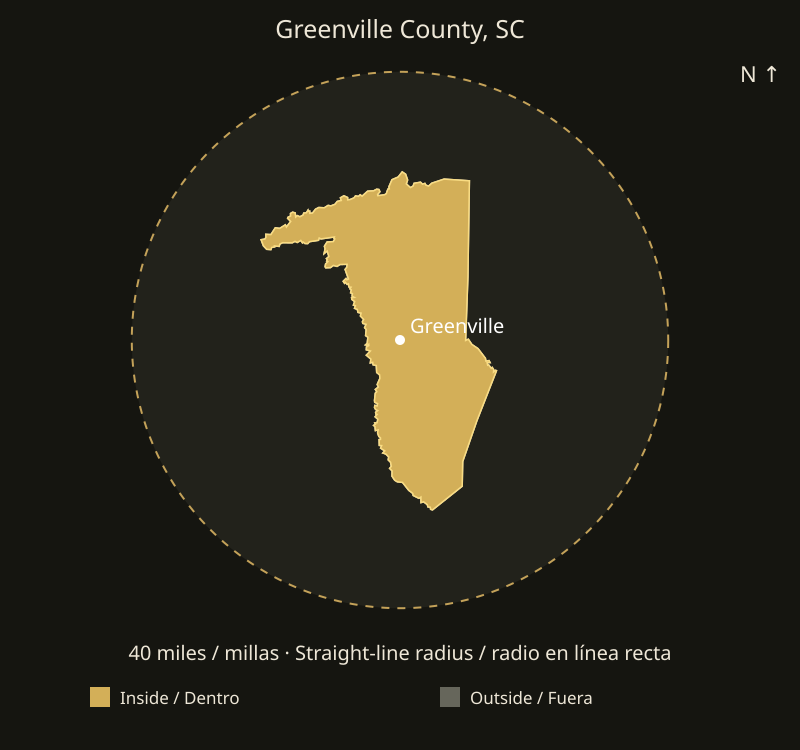

Driveways & extensions
Show us where you need more parking or a better connection to the house. We review the existing driveway, removal needs, elevations and the transition between new and existing concrete.
Concrete driveways, patios and walkways in Greenville County, SC. EBC also offers landscaping, pavers and welding. Request a free project estimate.
Request a free estimateA driveway extension, a new patio or a walkway should work with the areas you already use. EBC Construction is based in Greer and serves Greenville County. We review the existing surfaces, access and project goals with you before defining the work.
Show us where you need more parking or a better connection to the house. We review the existing driveway, removal needs, elevations and the transition between new and existing concrete.
Plan the route from the door to the yard and the usable patio area. Include steps, door thresholds and nearby planting areas in your photos so we can discuss the layout together.
Combine concrete with a paver border, a separate paver walkway or landscape improvements. Grading and excavation can be included in the preparation required by the concrete project.

For an addition to an existing driveway or patio, send a wide photo showing the whole area and close-ups of the connection points. Note gates, fences, trees, irrigation and where water collects after rain. These details help us plan access, preparation and the finished layout without guessing from a single photo.
See EBC projectsInclude the other parts of your project in the same request. Explore the service pages for the details and photos to send.
Paver patios and walkways, landscape improvements and yard preparation can be planned with your concrete work. Identify the areas and preferred materials in your request.
Explore landscaping & paversSend a full photo and close-ups of the piece, its measurements and intended use. We review materials and condition before confirming the welding work.
Explore weldingYes. Send the project address, approximate length and width, and photos of the existing driveway. We review the connection and available access before confirming the scope and scheduling a visit.
Yes. Describe each area separately and mark which surface you prefer. The estimate can address the concrete work and the outdoor improvements together.
EBC is a service-area business based in Greer, with project visits by appointment. Contact us with your project location to arrange the next step.
Include your address, photos, approximate dimensions and preferred timing. EBC confirms the scope and availability before scheduling work. Estimates and project visits are arranged directly with our team.
Also serving nearby areas:
Spartanburg County
The nearest part of Greenville County is approximately 0 straight-line miles from downtown Greenville. About 100% of the county area falls inside the 40-mile circle.
Coverage is limited to addresses within 40 miles of downtown Greenville in a straight line. Driving distance may be longer. EBC reviews the address, access, scope and availability before confirming a project.
Send your locationSend your address, photos, approximate measurements and preferred timing. Message EBC in English or Spanish to request an estimate.